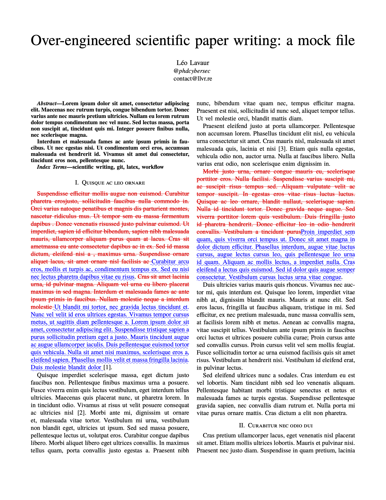

Over-engineered scientific paper writing
A few weeks ago, I received comments from reviewers after I submitted my first scientific paper. While reading through the instructions, I encountered the following:
While addressing comments of reviewers and revising your paper, please mark any text you update or add with a special color (e.g., blue), so that reviewers can easily notice your revisions.
At first, I thought about making a macro that adds color, and using that macro every time I make a change. But an issue appears then: how do I produce the final PDF? If I change the macro definition to remove color, I have ghost macros that do not do anything in my source code. That is not very portable. I could also use some sort of regex 1 to delete all occurrences of my macro, and risk tampering with my document by doing so.
Therefore, I started defining specifications for a writing workflow that would work. Here is what I came up with:
- Modifications must not require extra steps, i.e. no macro.
- Highlighting modifications must be easy, and automated.
- Every major update of the paper must be kept independently.
- Resources (e.g. bibliography, glossary, …) must be accessible to each paper.
- The workflow must be straightforward.
Introduction to my environment
There are a lot of ways to write LaTeX. Online with a service like Overleaf, offline with a TeX editor like Texmaker, or you can write by hand and compile yourself. I chose a hybrid approach with VSCode and LaTeX Workshop. Coming from a developer background, I’m used to (and enjoy!) writing in text editors, and VSCode has become my go-to for the past years. LaTeX Workshop is an extension that more-or-less mimic the experience of a fully-featured IDE like Overleaf. This has two advantages: (1) files are offline, I do not rely on an internet connection to work; (2) I control everything, from the packages installed on my system, to the latex engine I use to compile my documents.
To generate PDFs, many LaTeX engines and distributions exists. I settled on Tectonic Typesetting, which provides a bundle with a fork on XeTeX, and automatically downloads the packages and resources it needs to compile PDFs. I also keep a full TexLive distribution, in case of offline work. This way, I can use both LaTeX Workshop and my terminal to generate documents; I know what works and what does not, and why. Compiling my work is then as simple as:
$ ls
README.md build figures paper.tex resources
$ tectonic -o build paper.tex
Running TeX ...
[...]
Writing `paper.pdf` (612.01 KiB)
Other alternatives exist (pdfTeX, XeTeX, LuaTeX, latexmk to automate the build process, and more). I
won’t go over them, as a
lot
of
resources
exist to help you
chose. Google DuckDuckGo
is your friend.
Versioning with Git
Objective #3 requires that I be able to keep every major updates of my work. And while I like to be able to work without internet access, having backups online is pretty useful. Git solves both issues. Git is what we call a versioning program, or Version Control System, and is at the core of most modern developers’ workflow. It allows developers to keep a track of their changes in time, create different versions of their work, and above all collaborate with others. Therefore, I extensively use git in all my projects, managing a plethora of repositories.
Git tracks changes with commits, which is a record of all modifications made since the last known state. You can use commits to rollback to a previous state, and see the differences between versions. Branches are pointers to a series of commits that forked from the main (or master) branch. They are less useful when you work alone, but absolutely essential when collaborating with others.

One of Git’s features particularly shines to solve #3: tags. A tag is an immutable branch that points to a specific commit. It can be seen as a saved version of your work. When working on software, it allows you to tag releases, allowing users to fetch a specific version. But for paper writing, it enables quick comparison between versions of your work. Git supports two types of tags that you can use: lightweight tags and annotated tags.
The lightweight nothing more than a branch. It has a name, and once it has been created, modification will not be committed to it. An annotated tag, on the other hand, is stored as a full Git object, which also mean that you can add a description to it. It can be useful to remember what release contained what. Here is an example:
$ git commit -m "update: basic readme; add: paper.tex"
[main b8d7331] update: basic readme; add: paper.tex
2 files changed, 3 insertions(+)
create mode 100644 paper.tex
$ git tag v0.1
$ git tag
v0.1
# do some commits
$ git tag -a "v1.2" -m "version with related works"
$ git tag
v0.1
v0.2
# upload your tags
git push --tags
You will not directly see the difference between lightweight and annotated tags, but it will
appear on your web interface, and can also be seen with git show <tag_name>. Since tags work
pretty much like immutable branches, you can use the checkoutcommand to go back to a tag’s state.
$ ls
README.md build figures paper.tex resources
$ git checkout v1.0 # let's say you added readme in v1.2
$ ls
build figures paper.tex resources
Synchronizing resources
Objective #4 states: Resources (e.g. bibliography, glossary, …) must be accessible to each paper.
When working on your first paper, putting everything inside your project (e.g. your Git repository) is easy, and works pretty well. However, it does not scale well: how to you work on two papers at the same time? How can you keep your bibliography consistent between your papers? What if you wish to start working on your thesis manuscript, reusing previous works? You need something, available in all your repositories, that is ensured to be the same for all.
Git submodules provide such a functionality. Their goal is to import a Git repository inside another, and potentially inside several others. Having your shared resources synced in every project removes a tremendous amount of tinkering, and dealing with inconsistencies. So let’s have a look:
$ ls
README.md build figures paper.tex
$ git submodule add git@github.com:phdcybersec/latex-article-bootstrap-resources.git resources
Cloning into '<redacted>/latex-article-bootstrap/resources'...
remote: Enumerating objects: 6, done.
remote: Counting objects: 100% (6/6), done.
remote: Compressing objects: 100% (5/5), done.
remote: Total 6 (delta 0), reused 3 (delta 0), pack-reused 0
Receiving objects: 100% (6/6), done.
$ ls
README.md build figures paper.tex resources
As you can see, a new directory resources is now available, and contains the cloned repository. The submodule acts like an independent Git repository, which means you can pull, commit, and push within this repository like you would have normally done. However, unlike a simple repository, the submodule and its path are synced on the remote branch, which means that you can see it on any other up-to-date local copy. In the context of writing TeX, it is particularly useful to share bibliography, glossary, or a custom .sty packages.
The workflow slightly differs when working with submodules:
# clone a repository and its submodules
git clone --recursive <address>
# pull changes for all submodules in a repository
git submodules foreach git pull
# commit and push changes in a submodule
cd path/to/submodule
git commit -am "commit message" && git push
Highlighting modifications
We finally get to why I’ve started to work on this in the first place: being able to show to the
reviewers what changed since the last time, solving #1 and #2. Moreover, now that we are
able to keep track of versions, we can compare them! After a bit of searching around, I came across
latexdiff. Pretty much as the diff Unix command
that shows the differences between two files, latexdiff produces a new TeX file for you to
compile, that highlights the changes you’ve made.
Here is an example where I downloaded my work at tag “v1.0” and placed it in /tmp, in order to
compare it with my current version. Since latexdiff generates a TeX file, you can chain the
command with a TeX compiler, here Tectonic.
$ git clone -b "v1.0" --single-branch git@github.com:phdcybersec/latex-article-bootstrap.git /tmp/paper-v1.0
$ latexdiff /tmp/paper-v1.0/paper.tex ./paper.tex | tectonic -

However, TeX project are rarely that simple,
and are often split as they grow. However, latexdiff is only able to take atomic files to
compare—excluding the images, bibliographies, and such external resources. The --flatten option
can be used to flatten the input documents, by looking at \input or \include LaTeX commands,
and pasting the according files’ content in their place. This approach has some caveats, and might
break when encountering unusual code, like includes inside macros, or complex tables. You can check
that your LaTeX document support flattening by using a similar tool called latexpand (both
latexdiff and this one are available in CTAN repositories).
Automating the generation a diff file with a tag could be easily done: download the version of
your Git repository at a specified tag, flatten both your old and new versions, generate your
diff file, and build the according PDF. Fortunately, there already exists a tool that does just
that: git-latexdiff. This is the keystone
of this whole workflow.
Available as both an executable and a git subcommand, git-latexdiff allows you to automate the
aforementioned operations, in one command. Here is an example with our repository:
# opens paper.pdf in default viewer
$ git latexdiff --main paper.tex --tectonic "v1.0" --
Now I can write, with tagged version to which I can come back to, with an automated generation of the changes between versions. That covers my objectives #1 through #3.
Wrapping up
Merging all information above leads to an efficient workflow that checks #5. It is easy, automated, and provides reproducibility (one tag, one PDF). I can highlight differences between versions, thus providing reviewers with a high-quality diff file. More importantly, it is highly portable, adaptable, and extensible. The techs used here are standards, there are no underground self-made pieces of codes that could break; and Git can integrate with pretty much everything, from your shell to your favorite TeX editor.
This repository has been used to write
this post, and the
v2.0 tag will always
point to the version mentioned here. Don’t hesitate to clone or fork this repository to adapt it to
your needs. If you think something is missing, or you found mistakes, please reach out, I’ll be
happy to update the post accordingly.
-
A Regular Expression (or RegEx) is a pattern that matches text. Regex engines can then execute a regex to find subtext, or verify that a string matches that pattern. ↩︎